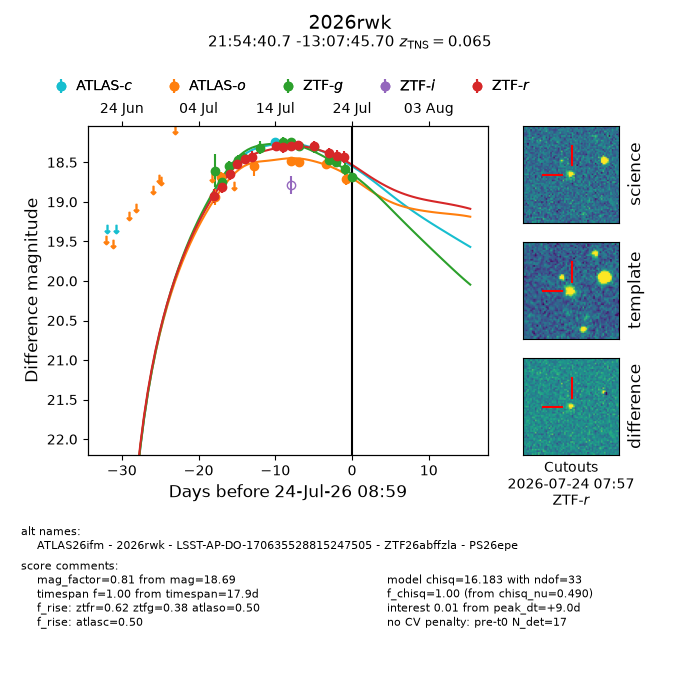
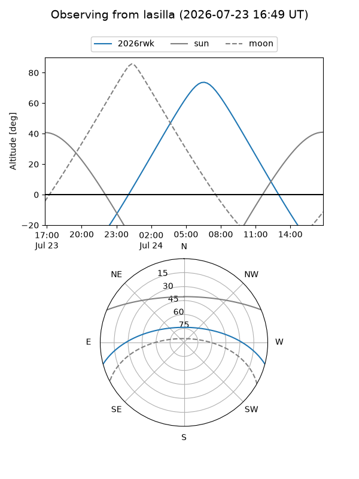
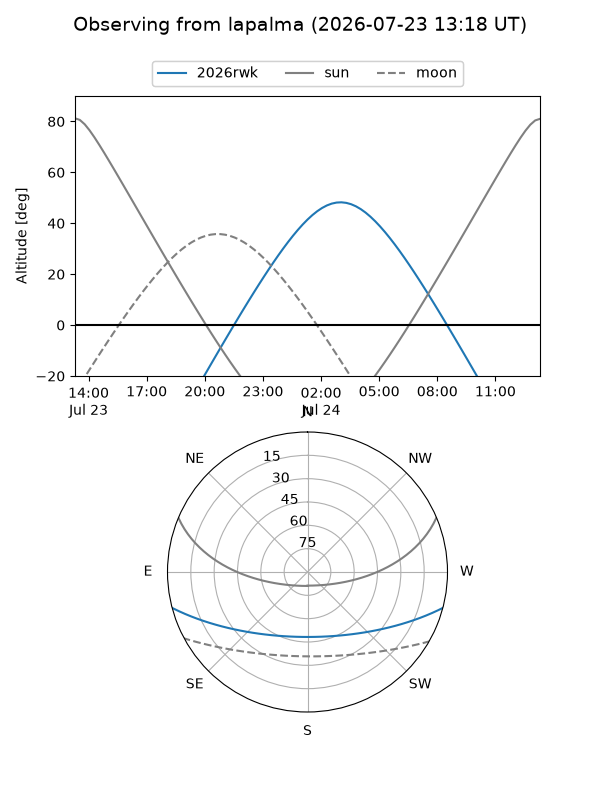
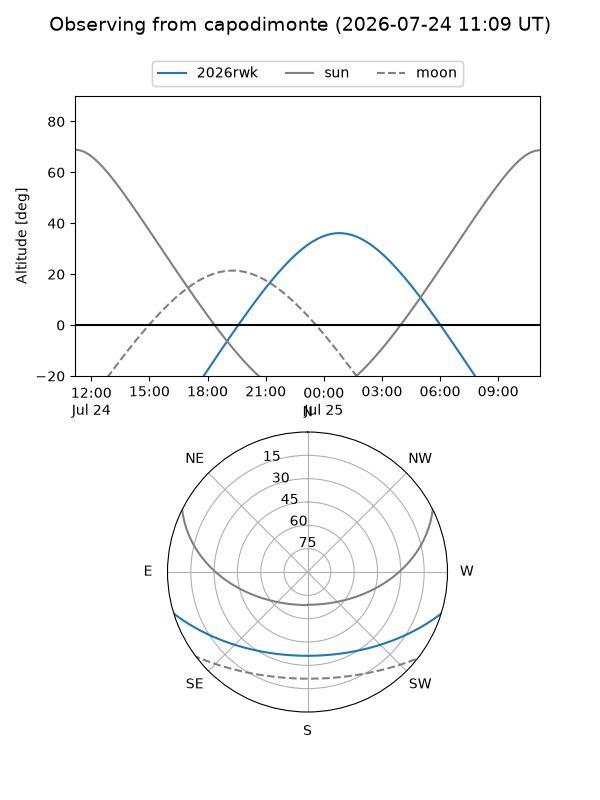
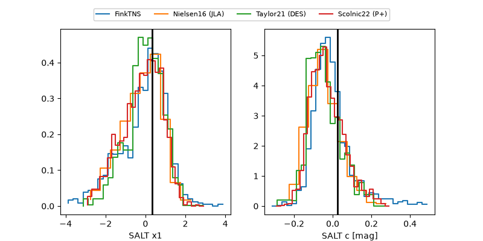

2026rwk
Target 2026rwk at 2026-07-24 09:01
Aliases and brokers:
FINK-ZTF: ztf.fink-portal.org/ZTF26abffzla
Lasair-ZTF: lasair-ztf.lsst.ac.uk/objects/ZTF26abffzla
ALeRCE-ZTF: alerce.online/object/ZTF26abffzla
YSE-PZ: ziggy.ucolick.org/yse/transient_detail/2026rwk
TNS name: wis-tns.org/object/2026rwk
Direct TNS query: direct search
alt names
ZTF26abffzla (ztf,fink_ztf)
2026rwk (tns,yse)
ATLAS26ifm (atlas)
PS26epe (panstarrs)
LSST-AP-DO-170635528815247505 (iau_lsst)
Coordinates:
equatorial (ra, dec) = 328.6698,-13.12936
equatorial (HMS+DMS) = 21:54:40.74,-13:07:45.70
galactic (l, b) = (42.6497,-46.47289)
Flags:
TNS type: SN Ia
TNS redshift: 0.0650
peak dt: +9.0
Photometry:
last atlasc=18.24, atlaso=18.71, ztfg=18.69, ztfr=18.43
1 atlasc, 7 atlaso, 14 ztfg, 14 ztfr detections
Lightcurve

Visibility



Additional plots
